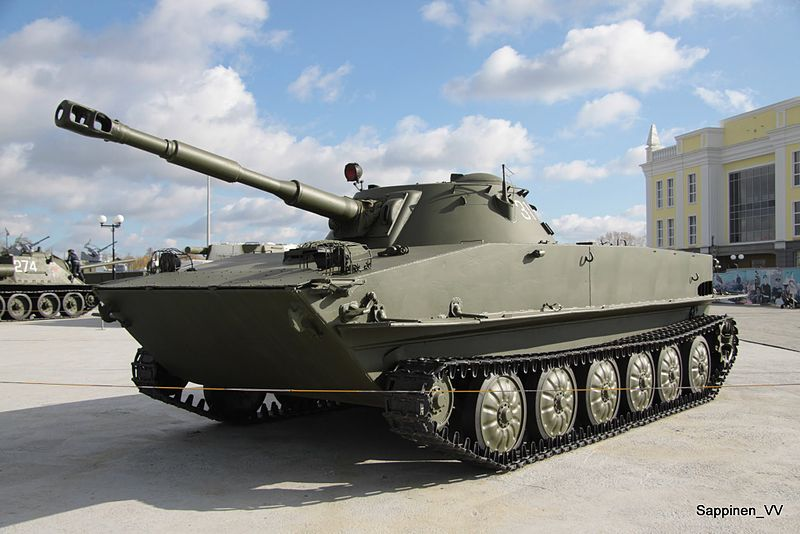

<div class="card">
    
    <div class="card-body">
        <h5 class="card-title">PT-76 - Neuvostoliittolainen kevyt panssarivaunu</h5>
        <p class="card-text">
            PT-76 on helppo tuhota koska sen panssarointi on lähes olematonta.
        </p>
        <p class="card-text">
            PT-76 on kuitenkin ketterä ja voi yllättää syöksymällä odottamattomasti erikoisistakin paikoista.
        </p>
        <p class="card-text">
            Tähän kevyeen panssarivaunuun tehoaa kaikki yli 12.7mm konekiväärit ja kanuunat
        </p>
        <a href="http://wiki.warthunder.com/index.php?title=PT-76" class="btn btn-link">PT-76 War Thunderin Wikissä</a>
    </div>
</div>